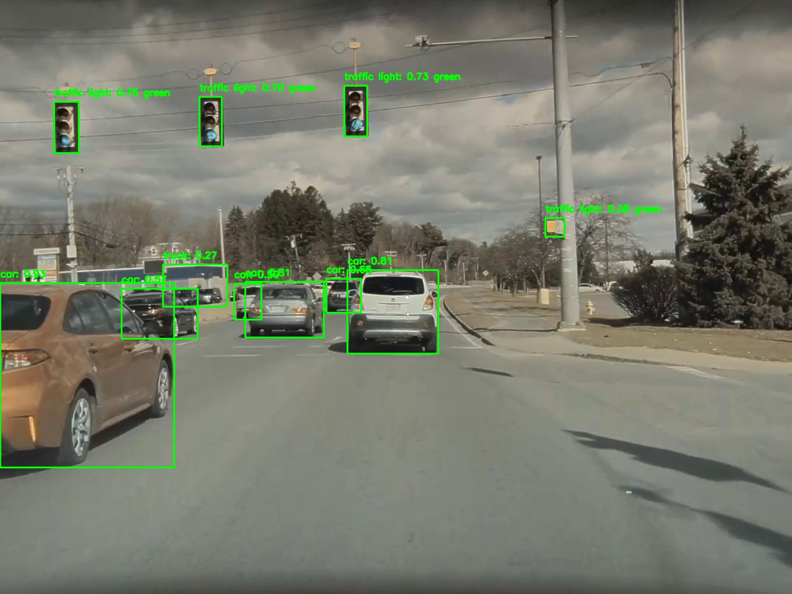
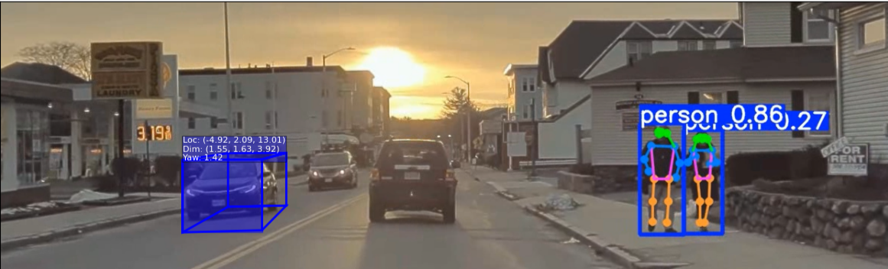
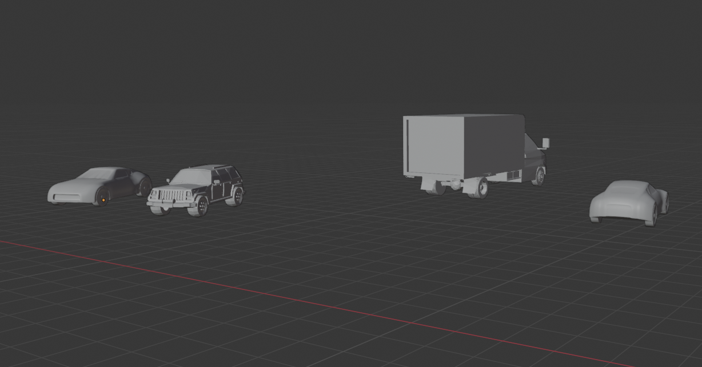
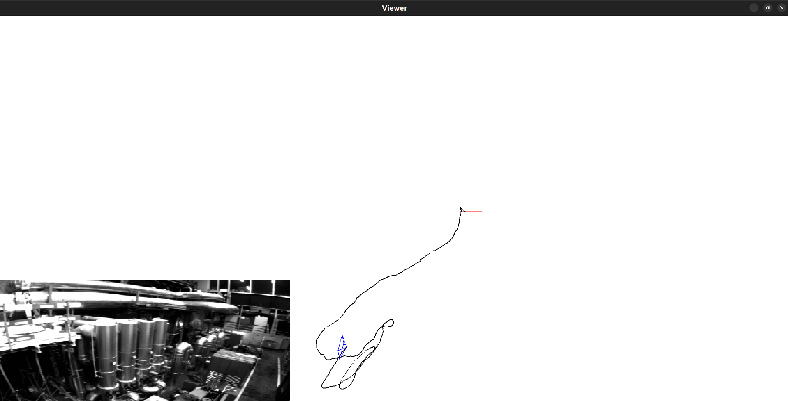
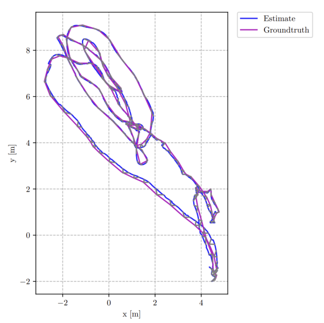

Projects
From motion planning in dynamic environments to end-to-end perception pipelines, systems built, validated, and deployed on real hardware.
Core Robotics
Dynamic Roadmaps: Real-Time Path Planning in Dynamic Environments
End-to-end implementation of the Dynamic Roadmaps (DRM) algorithm for motion planning in environments with moving obstacles. Implemented on the Fetch Robot in PyBullet using OMPL, developed as part of Motion Planning (RBE 550) at WPI.
- Roadmap Construction: Uses PRM to build an initial roadmap in an obstacle-free environment, computed offline so planning is fast at runtime.
- Dynamic Obstacle Integration: Checks roadmap nodes and edges for collisions with moving obstacles; removes invalid nodes while maintaining connectivity.
- Path Repair: Uses RRTConnect to reconnect disconnected roadmap segments caused by obstacle intrusion.
- Graph Search: Dijkstra's algorithm finds the shortest path from start to goal in the updated roadmap.
- Results: DRM took ~0.2s vs ~5s for the naive approach (with 5s roadmap construction), demonstrated on Fetch Robot in PyBullet.

Fetch Robot executing DRM-planned trajectory in PyBullet
Mobile Manipulation Capstone: youBot Autonomous Pick & Place
Capstone project for the Modern Robotics Specialization (Northwestern University / Coursera). Designed and implemented a complete mobile manipulation system for the KUKA youBot that autonomously navigates, picks up a block, and places it at a target, simulated in CoppeliaSim.
- Kinematics: Full forward/inverse kinematics for the youBot's arm and mobile base using the Modern Robotics Code Library.
- Trajectory Generation: Smooth end-effector trajectory planned via screw motion interpolation through grasp, transport, and release phases.
- Feedback Control: PI feedforward + feedback controller driving joint velocities to track the reference trajectory with error convergence.
- Obstacle Avoidance: Path planning integrated to navigate the mobile base while avoiding obstacles in the environment.
- Simulation: Final CSV of robot configurations played back in CoppeliaSim; full task execution visualized in real time.

youBot executing pick-and-place in CoppeliaSim
Physical AI
Attribute-Guided Robot Pick-and-Place
Robot learning workflow that connects object attributes, scene understanding, and manipulation behavior in a physical task loop.
- Built an end-to-end demo loop from scene input to robot manipulation output.
- Used object attributes to guide pick-and-place decisions in a physical setup.
- Focused on interpretable robot behavior, repeatable demos, and fast iteration.
Computer Vision & Perception
EinsteinVision: Autonomous Scene Understanding Pipeline
Full autonomous driving perception system inspired by Tesla's visual pipeline. Takes a live video stream and runs six parallel perception modules, their outputs fused and rendered in real time as a 3D Blender scene showing depth, objects, lanes, poses, and motion in a unified dashboard.
- Monocular Depth (MiDaS): Zero-shot depth estimation from single frames; depth maps assign 3D coordinates to detected objects and provide scene-level depth context in Blender.
- Lane & Traffic Signal Detection (Mask R-CNN + HSV): Instance segmentation for lane boundaries; ISS/HSV color thresholding classifies traffic signal state (red / yellow / green) per frame.
- Open-World Object Detection (DETiC + YOLOv11): DETiC detects 27,000+ object classes using image-level supervision; YOLO3D lifts detections to full 3D bounding boxes using scene geometry.
- Pedestrian Pose Estimation (OSX + YOLOv11-pose): OSX recovers whole-body mesh from single images; YOLOv11-pose runs real-time multi-person keypoint detection.
- Optical Flow (RAFT): Recurrent all-pairs field transforms compute dense per-pixel motion vectors used for dynamic object segmentation and motion-based scene decomposition.
- Blender Rendering Pipeline (bpy): All perception outputs feed a Python-driven Blender scene that auto-renders 3D boxes, depth maps, lane overlays, and pose skeletons as a live autonomous visualization.



Deep and Un-Deep VIO: Learning-Based Visual-Inertial Odometry
A comparative study of deep learning approaches to Visual-Inertial Odometry (VIO), estimating a robot's 6-DOF pose from fused camera and IMU data without GPS. Two architectures implemented and evaluated against classical filter-based methods.
- Supervised Deep VIO: End-to-end network predicts relative 6-DOF camera pose from sequential image pairs fused with IMU pre-integrated measurements via a learned cross-modal fusion module.
- Self-Supervised (Un-Deep VIO): Unsupervised approach using photometric consistency and stereo geometric constraints as the training signal, with no ground-truth pose labels required during training.
- Trajectory estimation accuracy assessed via ATE (Absolute Trajectory Error) and RPE (Relative Pose Error), benchmarked against IMU-only and classical filter-based baselines.
- Comparative analysis of generalization ability, data efficiency, and pose accuracy across supervised and unsupervised training regimes on standard benchmark sequences.


Alohomora: Boundary Detection & Image Classification
Two-phase computer vision project. Phase 1 builds a pb-lite boundary detector from scratch using custom filter banks and gradient maps, outperforming Sobel and Canny baselines. Phase 2 trains CNN classifiers on CIFAR-10, progressively improving from BasicCNN to ResNet-level accuracy.
- Filter Banks (Phase 1): Implemented DoG (Difference of Gaussians), LM (Leung-Malik), and Gabor filter banks from scratch: 48 filters across multiple scales and orientations capturing texture, edge, and frequency structure.
- Texture / Brightness / Color Maps: T, B, and C maps generated by K-means clustering of filter responses, producing compact local descriptors of image structure fed into the boundary pipeline.
- pb-lite Boundary Detection: Half-disc gradient masks on T/B/C maps compute χ² distances; weighted combination with Sobel/Canny produces boundaries that better preserve semantically meaningful edges.
- CNN Classification (Phase 2): Progressive architecture improvements on CIFAR-10: BasicCNN (~62%) to ImprovedCNN with batch norm, dropout, and augmentation (~75%) to ResNet achieving ~82% test accuracy.
MyAutoPano: Classical & Deep Learning Panorama Stitching
End-to-end panorama stitching system implemented in two approaches: a classical feature-matching pipeline and a deep learning homography estimation pipeline. Both stitch overlapping images into seamless wide-angle panoramas.
- Corner Detection (ANMS): Adaptive Non-Maximal Suppression selects spatially well-distributed strong corners, avoiding clustering that degrades feature matching quality.
- Feature Matching & RANSAC: SSD-based descriptor matching with ratio test; RANSAC robustly estimates the homography matrix while rejecting outlier matches.
- Image Warping & Blending: Cylindrical/planar blending produces seamless seams on both 2-image and multi-image sets.
- Deep Learning Homography (Supervised): Spatial Transformer Network trained to directly regress the 4-point homography end-to-end.
- Unsupervised Deep Approach: Photometric consistency as training signal, with no ground-truth homography labels required.